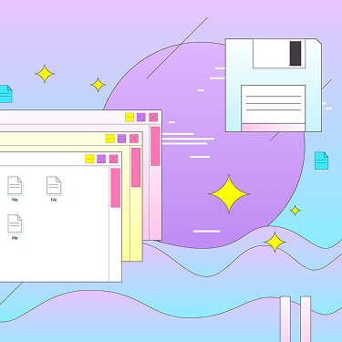

Фритрек и нулевой спринт: Подготовка к работе

</Html>Это было самое начало пути. На этом этапе важно было проникнуться основами и настроиться на учёбу. И, возможно, подумать, как новые знания могут повлиять на ваше будущее.
Бесплатный спринт был для меня своего рода тестом на профпригодность. Я пришла сюда с долей скепсиса, но в итоге поняла, что вёрстка — это понятная и логичная дисциплина, которой мне действительно интересно заниматься.